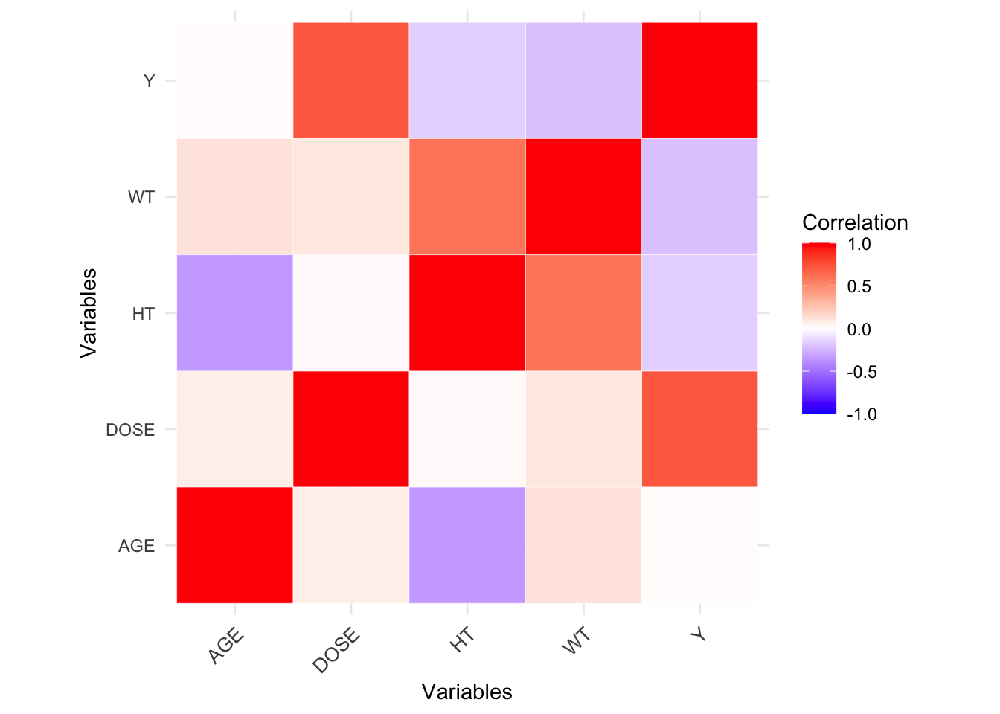

#Loading packages
library(tidyverse) #This includes ggplot2, tidyr, readr, dplyr, stringr, purr, forcats
library(tidymodels) #This includes recipes, rsample, parsnip, yardstick, and dials
library(here) # For file paths
#Path to summary data. Note the use of the here() package and not absolute paths
data_location <- here::here("fitting-exercise","mavoglurant.rds")
#load data
mavo_ml<- readRDS(data_location)
# Fix the random numbers by setting the seed
# This enables the analysis to be reproducible when random numbers are used
rngseed = 1234ml-models-exercise
Load the data and set the seed for reproducibility.
More processing
I can’t figure out the meaning of the numbers for the RACE variable. Nonetheless, here, we will recode so that RACE has three levels: 1, 2, and 3.
# Define "3" as a new level if it doesn't exist
mavo_ml$RACE <- fct_expand(mavo_ml$RACE, "3")
# Combine categories 7 and 88 into category 3
mavo_ml <- mavo_ml %>%
mutate(RACE = fct_collapse(RACE, "3" = c("7", "88")))
mavo_ml# A tibble: 120 × 7
Y DOSE AGE SEX RACE WT HT
<dbl> <dbl> <dbl> <fct> <fct> <dbl> <dbl>
1 2691. 25 42 1 2 94.3 1.77
2 2639. 25 24 1 2 80.4 1.76
3 2150. 25 31 1 1 71.8 1.81
4 1789. 25 46 2 1 77.4 1.65
5 3126. 25 41 2 2 64.3 1.56
6 2337. 25 27 1 2 74.1 1.83
7 3007. 25 23 1 1 87.9 1.85
8 2796. 25 20 1 3 61.9 1.73
9 3866. 25 23 1 2 65.3 1.65
10 1762. 25 28 1 1 104. 1.84
# ℹ 110 more rowsPairwise correlations
We will now make pairwise correlations for the continuous variables, removing any variables that show very strong correlations.
# Check continuous variables (Y, DOSE, AGE, WT, HT). Even though DOSE could be considered categorical...
str(mavo_ml)tibble [120 × 7] (S3: tbl_df/tbl/data.frame)
$ Y : num [1:120] 2691 2639 2150 1789 3126 ...
$ DOSE: num [1:120] 25 25 25 25 25 25 25 25 25 25 ...
$ AGE : num [1:120] 42 24 31 46 41 27 23 20 23 28 ...
$ SEX : Factor w/ 2 levels "1","2": 1 1 1 2 2 1 1 1 1 1 ...
$ RACE: Factor w/ 3 levels "1","2","3": 2 2 1 1 2 2 1 3 2 1 ...
$ WT : num [1:120] 94.3 80.4 71.8 77.4 64.3 ...
$ HT : num [1:120] 1.77 1.76 1.81 1.65 1.56 ...# Select the continuous variables
continuous_vars <- select_if(mavo_ml, is.numeric)
# Calculate the correlation matrix
correlation_matrix <- cor(continuous_vars)
# Convert correlation matrix to a data frame
mavo_cor <- as.data.frame(correlation_matrix)
# Add row names as a column
mavo_cor$vars <- rownames(mavo_cor)
# Reshape the data to long format
correlation_long <- pivot_longer(mavo_cor, cols = -vars, names_to = "Variable_1", values_to = "Correlation")
# Create a ggplot for the correlation plot
mavo_plot_cor <- ggplot(data = correlation_long, aes(x = vars, y = Variable_1, fill = Correlation)) +
geom_tile(color = "white") +
scale_fill_gradient2(low = "blue", high = "red", mid = "white",
midpoint = 0, limit = c(-1,1), space = "Lab",
name="Correlation") +
theme_minimal() +
theme(axis.text.x = element_text(angle = 45, vjust = 1, size = 10, hjust = 1)) +
labs(x = "Variables", y = "Variables") +
coord_fixed()
mavo_plot_cor
# Save figure
figure_file <- here("ml-models-exercise", "correlation_plot.png")
ggsave(filename = figure_file, plot=mavo_plot_cor, bg="white")Some variables appear to be strongly correlated, but nothing is excessive (|>0.9|).
Feature Engineering
Don’t worry: feature engineering is just a “fancy” phrase for creating new variables. First we will create a new variable called BMI. Our measurements for height and weight are in the metric system (centimeters and kilograms, accordingly). According to the CDC the formula for BMI is: \([weight (kg) / [height (m)]^2\).
# Create a new variable called BMI
mavo_ml <- mavo_ml %>%
mutate(BMI = (WT / (HT^2)))
mavo_ml# A tibble: 120 × 8
Y DOSE AGE SEX RACE WT HT BMI
<dbl> <dbl> <dbl> <fct> <fct> <dbl> <dbl> <dbl>
1 2691. 25 42 1 2 94.3 1.77 30.1
2 2639. 25 24 1 2 80.4 1.76 26.0
3 2150. 25 31 1 1 71.8 1.81 21.9
4 1789. 25 46 2 1 77.4 1.65 28.4
5 3126. 25 41 2 2 64.3 1.56 26.4
6 2337. 25 27 1 2 74.1 1.83 22.1
7 3007. 25 23 1 1 87.9 1.85 25.7
8 2796. 25 20 1 3 61.9 1.73 20.7
9 3866. 25 23 1 2 65.3 1.65 24.0
10 1762. 25 28 1 1 104. 1.84 30.6
# ℹ 110 more rowsModel Building
Now we will explore 3 different models: 1) a linear model with all predictors; 2) a LASSO regression; 3) a random forest (RF).
First, let’s make sure we have the glmnet and ranger packages installed and loaded.
# Install and load needed packages
#install.packages("glmnet")
#install.packages("ranger")
library(glmnet)
library(ranger)# ChatGPT, GitHub CoPilot and looking at Kevin Kosewick's code helped me to write this code.
# Set seed for reproducibility
set.seed(rngseed)
# Define outcome and predictors
outcome <- "Y"
predictors <- setdiff(names(mavo_ml), outcome)
# Create recipe for linear and LASSO models (creating dummy variables and standardizing continuous variables)
mavo_recipe_lmlasso <- recipe(Y ~ ., data = mavo_ml) %>%
step_dummy(all_nominal(), -all_outcomes()) %>%
step_normalize(all_predictors())
# Create recipe for random forest model (no need to create dummy variables or standardize continuous)
mavo_recipe_rf <- recipe(Y ~ ., data = mavo_ml)
# Define models
# Linear model
mavo_lm <- linear_reg() %>%
set_engine("lm") %>%
set_mode("regression")
# LASSO model
mavo_LASSO <- linear_reg(penalty = 0.1, mixture = 1) %>%
set_engine("glmnet") %>%
set_mode("regression")
# Random forest model
mavo_rf <- rand_forest() %>%
set_engine("ranger", seed = rngseed) %>%
set_mode("regression")
# Create workflows
# Linear workflow
linear_workflow <- workflow() %>%
add_recipe(mavo_recipe_lmlasso) %>%
add_model(mavo_lm)
# LASSO workflow
LASSO_workflow <- workflow() %>%
add_recipe(mavo_recipe_lmlasso) %>%
add_model(mavo_LASSO)
# Random forest workflow
rf_workflow <- workflow() %>%
add_recipe(mavo_recipe_rf) %>%
add_model(mavo_rf)
# Fit models
#Linear
linear_fit <- linear_workflow %>%
fit(data = mavo_ml)
# LASSO
LASSO_fit <- LASSO_workflow %>%
fit(data = mavo_ml)
# Random forest
rf_fit <- rf_workflow %>%
fit(data = mavo_ml)
# Tidy all results linear and LASSO
linear_fit_results <- tidy(linear_fit, fmt = "decimal")
linear_fit_results# A tibble: 9 × 5
term estimate std.error statistic p.value
<chr> <dbl> <dbl> <dbl> <dbl>
1 (Intercept) 2445. 54.3 45.1 3.45e-73
2 DOSE 701. 56.1 12.5 6.22e-23
3 AGE 40.7 67.1 0.607 5.45e- 1
4 WT 1822. 745. 2.45 1.60e- 2
5 HT -1440. 490. -2.94 4.00e- 3
6 BMI -1715. 601. -2.85 5.20e- 3
7 SEX_X2 -148. 71.7 -2.07 4.06e- 2
8 RACE_X2 72.7 57.2 1.27 2.07e- 1
9 RACE_X3 -71.5 59.6 -1.20 2.33e- 1LASSO_fit_results <- tidy(LASSO_fit)
LASSO_fit_results# A tibble: 9 × 3
term estimate penalty
<chr> <dbl> <dbl>
1 (Intercept) 2445. 0.1
2 DOSE 702. 0.1
3 AGE 39.7 0.1
4 WT 1713. 0.1
5 HT -1369. 0.1
6 BMI -1627. 0.1
7 SEX_X2 -147. 0.1
8 RACE_X2 72.5 0.1
9 RACE_X3 -69.7 0.1# Extract info from random forest
rf_fit_results <- rf_fit$.workflow[[1]]$fit$fit$forest$importance %>%
as_tibble()
rf_fit_results# A tibble: 0 × 0